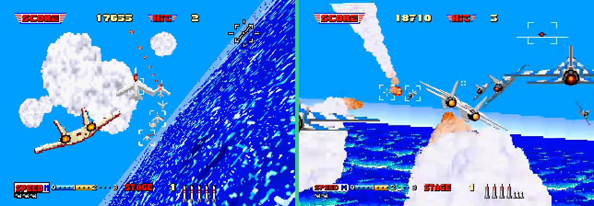
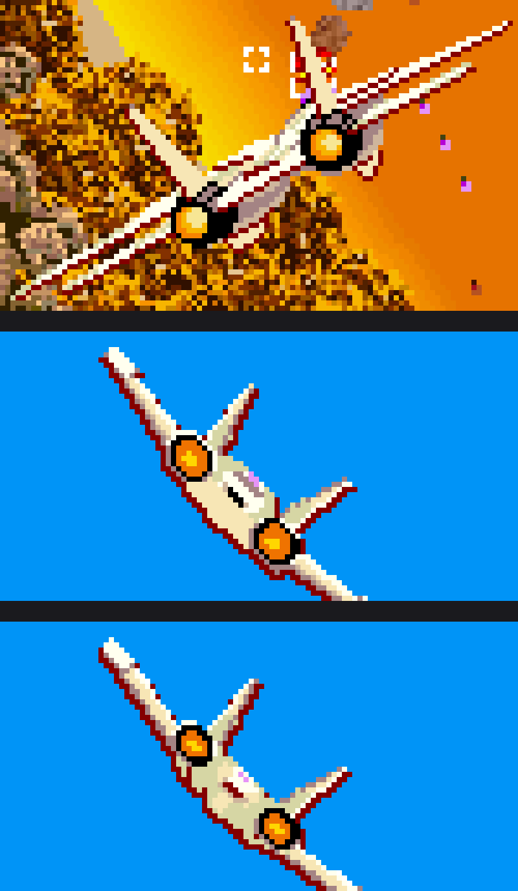
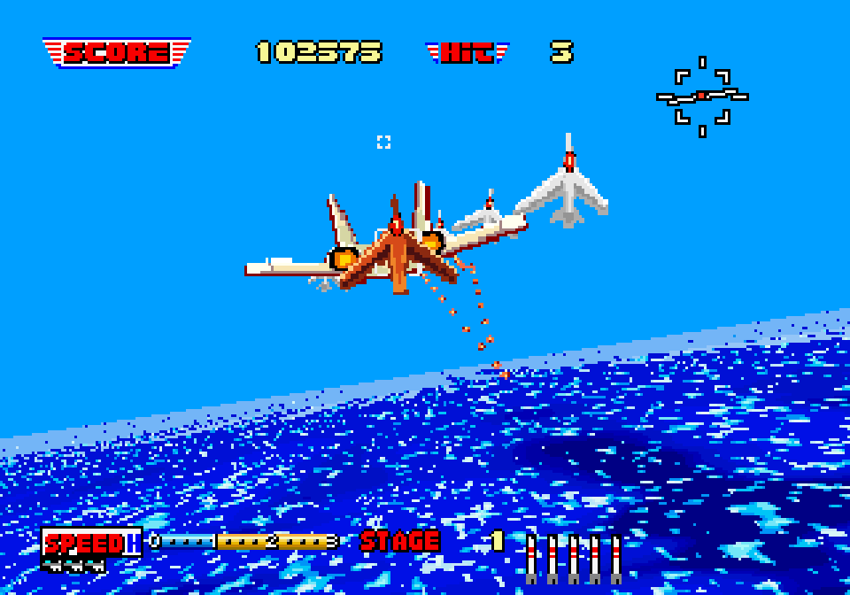

A game can satisfy all forty-three repaired criteria and be wrong the instant it moves,
and that is what has happened. — the R9 judge, withdrawing its own 9/10 draft
The owner looked at the Round 8 board and said the main issues were the jet, the enemy jets,
and the feel — missiles, responsiveness, heat-seeking, how the sights lock —
and asked whether the judge compares video or only images.
Two greps settled it. Across every judge report, both art critiques, REFERENCE.md
and GAME_SPEC.md: "has any reviewer compared motion" — zero hits.
"missile tracking / heat-seeking / lock acquisition / turn rate" — zero hits.
Nine rounds. Every instrument reads one frame or a scalar.
still frames & telemetry
9 / 10
What all nine rounds measured. R9's work here is real and large.
motion — first measured this round
4 / 10
Mostly unknown, not mostly wrong. An uncharted axis.
composite
7 / 10
The 3 → 4 → 6 → 7 → 7.5 → 8 → 8 → 8.5 trend is retired, not continued.
The image nine rounds never produced
Ours (left) against the arcade (right), same combat moment, in motion
ours · left | arcade · right

Visible here and measured by no gate we own: the arcade's frame holds ~6 aircraft where ours holds 2 — its average is low because it bursts and gaps, and we flattened to a constant trickle. Its missile trails are thick persistent smoke columns; ours are dotted specks. Its enemies are dark and high-contrast; ours are pale. Its lock brackets sit tight on targets; ours scatter. One frame pair, not phase-aligned — shown to redirect the round, not as a measurement.
What Round 9 built — all of it real
measure
arcade
before
after
aircraft emitted / s
0.4–0.74
2.7–2.9
0.567–0.647
sky empty of aircraft
39.7%
0.0–0.4%
39.4%
longest empty stretch in 90 s
—
0.32 s
3.4–5.1 s median
title wordmark height
115
91
114
title frames distinct over 120 ticks
animates
1
all distinct
drawRearFar() fill — 44.8% of enemy sprites
an aircraft
100.0% (a rectangle)
56.3%
The jet: arcade / R8 / R9
arcade → R8 → R9

The arcade is four thin blades with sky between them. R8 was a filled cream mass. R9 is blades. This is the owner's "our jet is still not good enough", answered on the axis that carried it.
Two aircraft, not seven
ours · tick 2076

Hand-counted on the judge's own operator: 7–8 before, 2 after. The median continuously-occupied run fell from 86.5 s — one unbroken block of aeroplanes — to 5.3–5.7 s.
Round 10 — the motion round
feelThe missile is a timer that cannot miss. The entire impact condition is hit = target && m.depth >= target.d — no lateral term, no proximity, no radius. 93.8% hit rate, outcome fixed at launch, no turn-rate limit, and a final 0.028 s in which it snaps to the target. An AB2 missile that always hits is not a missile, it is a scoring button with a 0.55 s delay.
feelThe lock takes one tick and is invisible — a locked target looks exactly like an unlocked one. No sweep to earn, no brackets filling to read.
feelThe stick has no inertia — first-order lag, no overshoot, nothing to anticipate or let momentum carry.
motionOur explosion is a plateau where the arcade's is a flash. It holds within 60% of peak for 0.600 s against the arcade's 0.067 s. Every colour gate passes it, correctly — what is wrong is its envelope in time, and no criterion here has one.
criteriaThe new drawing criterion's sign is inverted. DRAW-WEIGHT was validated against synthetics, rotation, two implementations, three mask rules and our own alpha — and never once against two real sprites whose relative quality was known. On that pair it ranks the untouched sprite above the redrawn one. Must be fixed before anything is gated on it.
carriedTwo of eight enemy sheets were redrawn, and the six that were not include the one owning 69.2% of stage-1 enemy screen area. The carrier launch — the first screen a player sees — is untouched since R7.